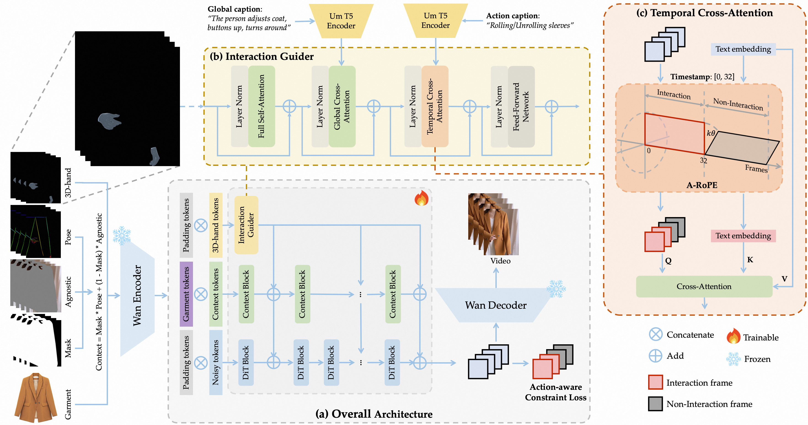

iTryOn: Mastering Interactive Video Virtual Try-On
with Spatial-Semantic Guidance
Abstract
Video Virtual Try-On (VVT) aims to seamlessly replace a garment on a person in a video with a new one. While existing methods have made significant strides in maintaining temporal consistency, they are predominantly confined to non-interactive scenarios where models merely showcase garments. This limitation overlooks a crucial aspect of real-world apparel presentation: active human-garment interaction. To bridge this gap, we introduce and formalize a new challenging task: Interactive Video Virtual Try-On (Interactive VVT), where subjects in the video actively engage with their clothing (e.g., pulling a hem or unzipping a jacket). This task introduces unique challenges beyond simple texture preservation, including: (1) resolving the semantic ambiguity of interactions from standard pose information, and (2) learning complex garment deformations from video where interactive moments are sparse and brief. To address these challenges, we propose iTryOn, a novel framework built upon a large-scale video diffusion Transformer. iTryOn pioneers a multi-level interaction injection mechanism to guide the generation of complex dynamics. At the spatial level, we introduce a garment-agnostic 3D hand prior to provide fine-grained guidance for precise hand-garment contact, effectively resolving spatial ambiguity. At the semantic level, iTryOn leverages global captions for overall context and time-stamped action captions for localized interactions, synchronized via our novel Action-aware Rotational Position Embedding (A-RoPE). Furthermore, we design an action-aware constraint loss to stabilize training and focus the learning process on these critical interactive frames. To facilitate research and evaluation, we construct VVT-Interact, the first large-scale dataset for this task. Extensive experiments demonstrate that iTryOn not only achieves state-of-the-art performance on traditional VVT benchmarks but also establishes a commanding lead in the new interactive setting, marking a significant step towards more dynamic and controllable virtual try-on experiences.

Interactive Virtual Try-On Results
Our Approach: The iTryOn Framework
Our framework, iTryOn, is built upon a Diffusion Transformer backbone. It uniquely incorporates a multi-level guidance mechanism to handle complex human-garment interactions. A 3D hand prior provides fine-grained spatial cues, while time-stamped action captions offer precise semantic control. This dual guidance, combined with an action-aware loss, enables the generation of physically plausible and controllable interactive try-on videos.

Comparison on VVT-Interact Dataset
Comparison on ViViD Dataset
Ablation Study
We visualize the impact of each component. Simply adding data is insufficient. Spatial guidance enables physical contact, and semantic guidance provides the correct intent, which are both crucial for high-fidelity interactive try-on.
Citation
@inproceedings{zheng2026itryon,
title={iTryOn: Mastering Interactive Video Virtual Try-On with Spatial-Semantic Guidance},
author={Zheng, Jun and Xu, Zhengze and Chen, Mengting and Wang, Jing and Lan, Jinsong and Zhu, Xiaoyong and Zhang, Kaifu and Zheng, Bo and Liang, Xiaodan},
booktitle={Proceedings of the 43rd International Conference on Machine Learning (ICML)},
year={2026}
}